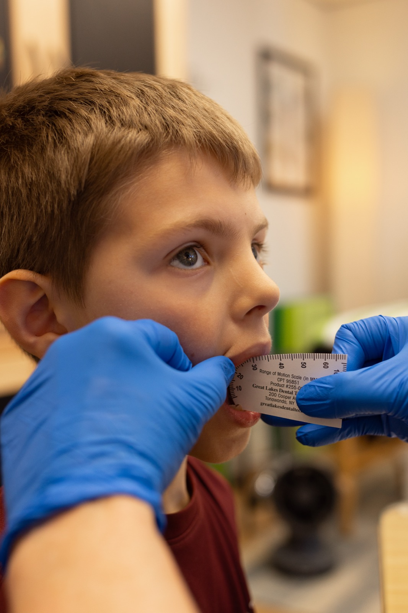
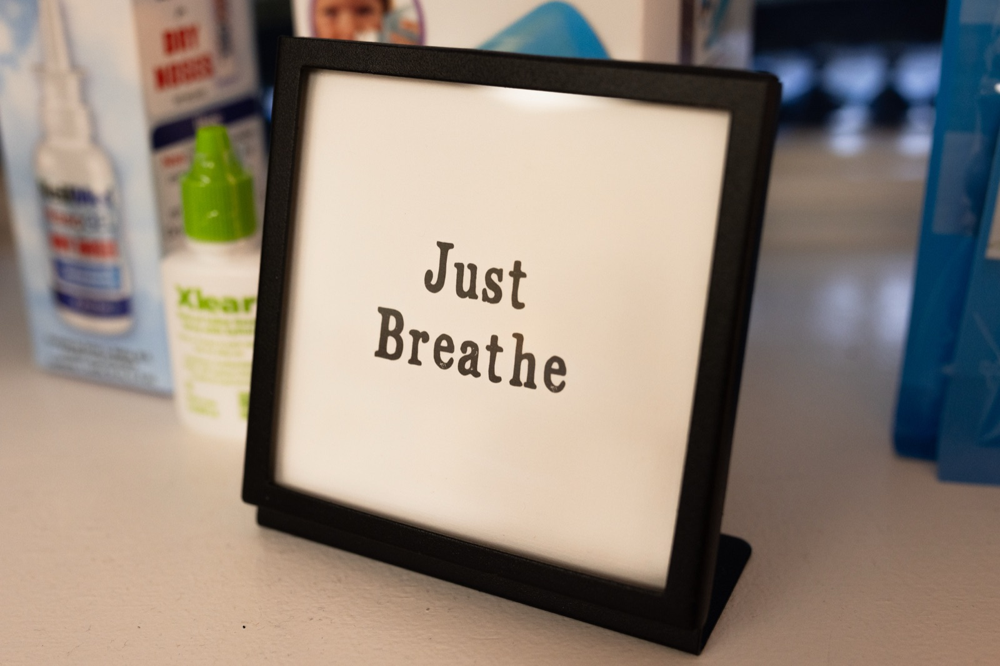

An exercise-based approach to muscle re-education
Orofacial myofunctional therapy (OMT) retrains the resting posture of the tongue, jaw, lips, and facial muscles to restore proper breathing, swallowing, and speaking. The tongue has eight distinct muscles — and where it rests at all times matters deeply to your facial structure and airway health.
Correct oral rest posture: tongue resting on the roof of the mouth (tip just behind the upper front teeth), lips gently together, teeth slightly apart, breathing through the nose.
Research shows that a continued open mouth breathing posture can be related to poor oral health, digestive issues, periodontal disease, and sleep-disordered breathing.

Conditions we treat
Mouth breathing
Habitual breathing through the mouth rather than the nose — linked to poor oral health, sleep disorders, and altered facial growth.
Tongue thrust
The tongue pushes forward or spreads between the teeth during swallowing, causing dental malocclusions and affecting speech.
Speech disorders
Weak muscle tone of the tongue, lips, and jaws can prevent proper articulation — especially lisps and other articulation errors.
Tethered oral tissues
Tongue-ties, lip-ties, and buccal (cheek) ties restrict tongue, lip, and cheek movement, affecting nursing, swallowing, speech, and fascial tension through the head and neck.
Sleep-disordered breathing
Snoring, obstructive sleep apnea, and restless sleep are closely connected to orofacial dysfunction. OMT is part of a multidisciplinary solution.
Jaw pain & headaches
Neuromuscular dysfunction in the tongue and jaw can cause instability leading to TMJ disorders, chronic headaches, and neck pain.
Digestive issues
Digestion begins in the mouth. Improper chewing and swallowing patterns can lead to stomach aches, choking on solids, and poor nutrition.
Oral habits
Prolonged thumb sucking, pacifier use, nail biting, and similar habits can reshape developing bone and contribute to OMDs over time.
The nose is the body's first filter
Nasal breathing warms and humidifies air, releases nitric oxide for antibacterial protection, and regulates CO₂ levels for optimal oxygen delivery to the brain and body. Mouth breathing puts the body in a chronic "fight or flight" state that affects sleep, focus, and development.

You don't need a referral to get started
Early identification is advantageous — but adults of all ages can benefit from OMT. It is never too late. Many patients come after noticing persistent symptoms that haven't resolved with other treatments, or after being referred by their orthodontist, dentist, or ENT.